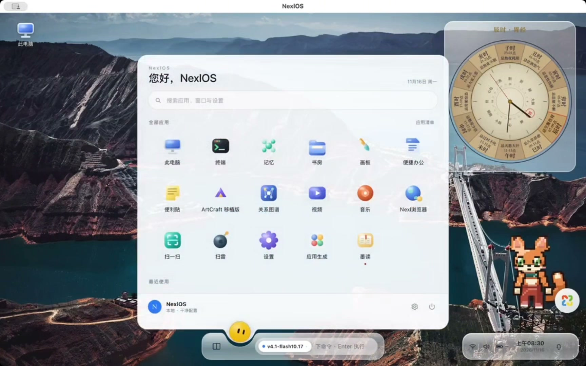
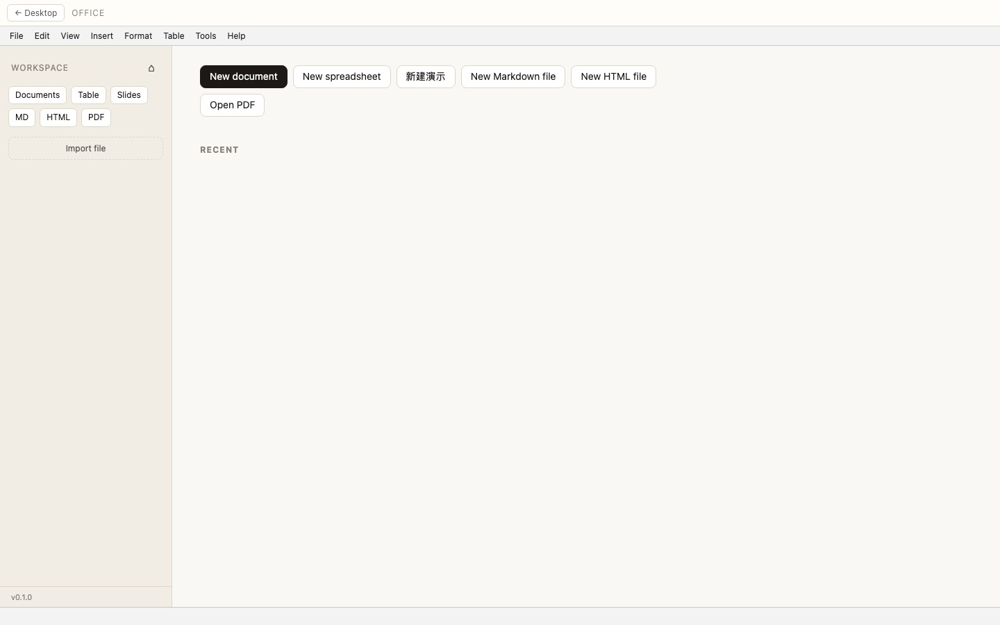
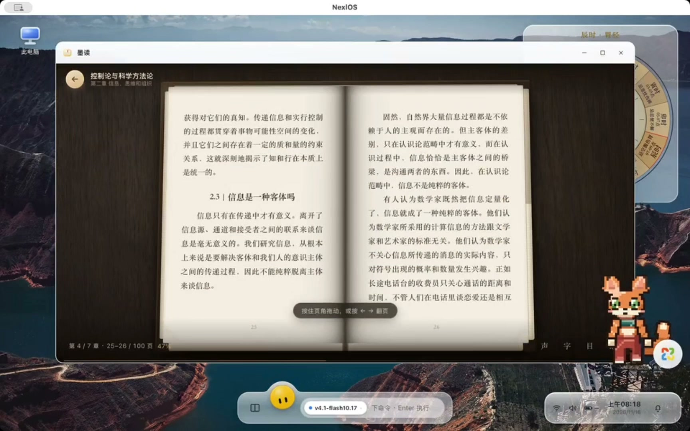

你的模型
不带 key，也不设默认 provider。插件读当前 DSH 档案里已有的模型；
看不到模型时，能力层返回 501 并附原因，状态显示 unavailable，不假装就绪。
BYOK
当前档案
501 有原因
NexlOS 是给 agent 用的桌面系统：应用生成、仓库导入、文件、终端、蜂群和浏览器都长在同一台桌面上。 这一页讲它为什么存在、应用为什么是文件、里面有什么，以及这一版明确的边界。
你每天把它的输出复制进别的应用，或者干脆把整台机器交给它。 windos2026 给 agent 一个能工作的桌面，也给你一条随时能带走的出口。
| 今天 | 代价 | windos2026 |
|---|---|---|
| Agent 只会输出文字 | 人肉复制进别的应用，每天几十次 | 桌面 + 应用生成，产物直接落到 apps/ |
| 想让 Agent 用你的电脑 | 全盘权限，或按小时计费的云沙箱 | 本地运行；应用是目录，边界看得见 |
| 想装一个 Agent 桌面 | 常见 Electron 桌面每个都自带 Chromium，150–250 MB 量级 | 插件版 8.32 MiB，复用宿主已有的模型 |
| 每个 AI 工具都要单独装 | 5–10 个应用之间来回切换 | 一个桌面，17 个应用，25 条命令 |
体积指 @nexlos/os 1.1.1-lite.0 的 npm tarball；解包 13.98 MiB / 291 文件。独立应用形态见 版本。
NexlOS 不接管模型，也不建账号。它只把桌面、应用和文件操作装进你已经在用的宿主或机器里。
不带 key，也不设默认 provider。插件读当前 DSH 档案里已有的模型；
看不到模型时，能力层返回 501 并附原因，状态显示 unavailable，不假装就绪。
生成物是 apps/<id>/index.html 加一份 app.json。
复制这个目录到任何静态服务器，它照样能跑；给它一个 GitHub 地址，它也能克隆、构建、挂成应用。
不建账号、不收集遥测、不部署第二套控制面。装进哪个宿主，就用那个宿主的模型； 单独运行，就用你自己的本机。
不是把网页套进一个窗口。生成、验收、导入、带走，每一步都落在本机的文件和命令上。
用当前宿主的模型生成单文件 HTML；生成后在浏览器里跑验收，失败自动修一次。
只接受 github.com/owner/repo；有根 index.html 直接用，有 build 脚本时安装并构建。
目录加一份 app.json。复制、备份、删除都是文件操作；拷到任何静态服务器照样跑。
书房、办公、画板、Agent 浏览器、终端、记忆、关系图谱、扫雷、音乐……开箱可用，不用另装。
结构优先读取网页语义、正文、链接、表格与代码；需要人类视图时，再在独立 Chrome 里打开。
右栏状态空间、对话状态弹窗、集群浮窗三处同源；每个子代理都能打开只读对话。
「系统」不出现在桌面与 Dock，可从应用清单或设置进入。ArtCraft 移植版是非官方移植，来源与许可见 ATTRIBUTION。
千禧年的外壳，2026 年的内核。两套主题共用同一份几何；窗口、Dock、桌面图标指向同一个入口。




applications/reader，按自身说明使用。下面这些限制写在仓库文档里。把它们放在这里，是为了让你在安装前就知道边界。
独立应用仍是本地候选0.6.15 已有三平台构建，尚未公开下载；当前公开可装的是 8.32 MiB 插件版。
Windows 路径按 alpha 对待macOS / Linux 是一等路径；Windows 发现问题请提 issue。
未做代码签名与公证macOS 可能需 xattr -d com.apple.quarantine；Windows 会有 SmartScreen 提示。
不含 CJK 办公字体包公开仓不带中文字体；中文办公回退系统字体，或自行安装 OFL 字体包。
画板与 7 种扩展语言是可选包不随主包分发；没装时画板显示「未安装」，扩展语言不出现在选择器里。
浏览器引擎与模型由宿主提供插件不自带模型；独立宿主没有终端 PTY 时，相关命令返回 501 并说明原因。
应用不是签名包带走的是文件，不是签名；没有跨机器出处校验。
没有遥测，也没有账号应用、代码和数据都在你自己的机器上；安装脚本只写宿主 profile 的依赖与链接。